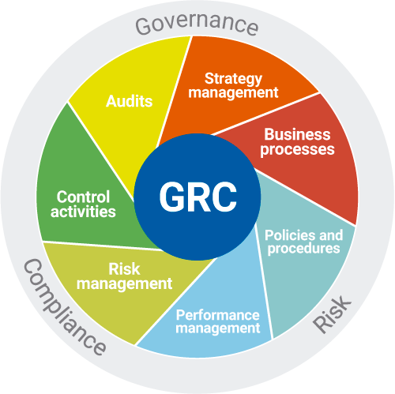

Governance
SoftExpert GRC provides an integrated framework to corporate governance, enterprise risk management and corporate compliance with applicable laws and regulations, including SOX. The software helps the organization to act ethically correct and in accordance with its risk appetite, internal policies and external regulations through the alignment of strategy, processes, technology and people, thereby improving efficiency and effectiveness.